国・地域の見分け方
- ドメインは.pe
- 言語はスペイン語
- 標識の棒が白黒のストライプの時が多い
- 電柱は同じ向きに３本棒が付きだしている(from 『【geoguessr攻略】国あてに使える中米、南米の電柱を徹底解説！ by まさむね』)
- タクシーやトラックのナンバープレートが蛍光に近い黄色のときがある
- Google Carが黒色の時がある。南米では他にアルゼンチンとウルグアイも同じ色のGoogle Carを使う(参考文献 Cameras and Cars - Metagame Guide)。
- ボラードは黄色に塗られていることが多い
- 急カーブのガードレールや縁石にオレンジと黒の縞模様が斜めに描かれている
- 細長い箱が家の壁に埋め込まれていたり外についていたりする
見つかる標識
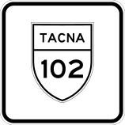
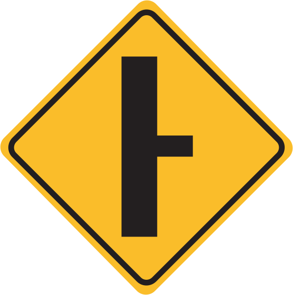
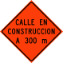
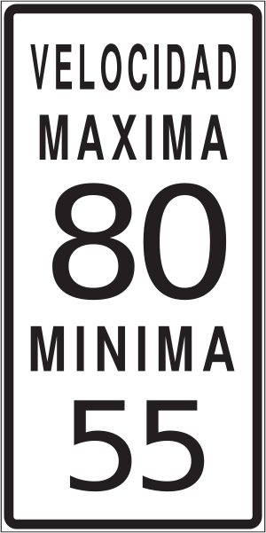
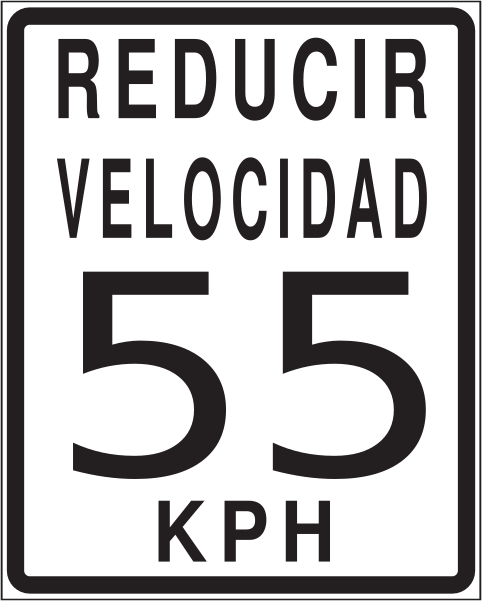
代表的な企業
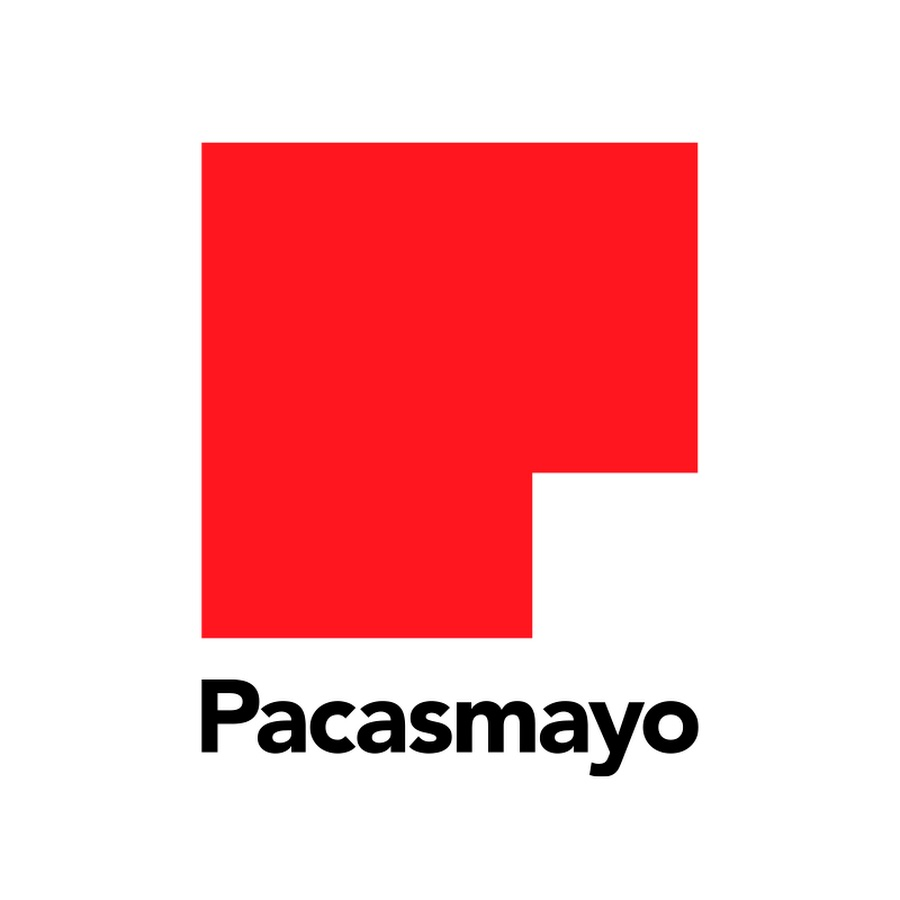


ナンバープレート上部に青色以外の色が付いているのはペルーかエクアドルの可能性が高い。バスは緑色やオレンジ、タクシーとトラックは黄色の蛍光色・(参考文献 Vehicle registration plates of Peru)。
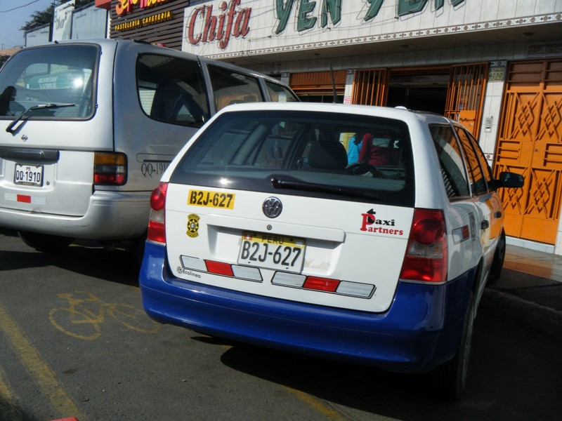

CC0
バイクやトゥクトゥクに似た形の乗り物はナンバープレートが水色のことがある(参考文献 Vehicle registration plates of Peru)。

By Bernard Gagnon - Own work, CC BY-SA 3.0, Link

By <a href=“//commons.wikimedia.org/wiki/User:Zcarstvnz” title=“User:Zcarstvnz”>Zcarstvnz - Own work, CC BY-SA 4.0, Link
電柱は同じ向きに棒が付きだしているものがある(from 『【geoguessr攻略】国あてに使える中米、南米の電柱を徹底解説！ by まさむね』)
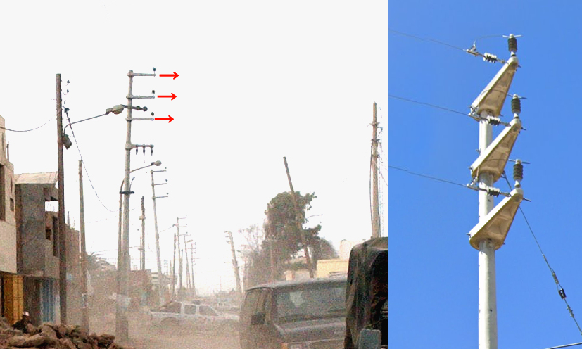

By Pitxiquin- Own work, CC BY-SA 4.0, Link
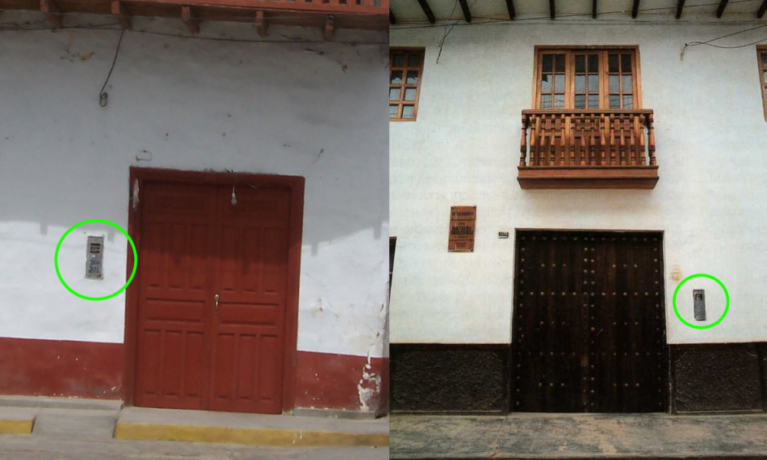
{{% notice tip %}} 急カーブのガードレールや縁石にオレンジと黒の縞模様が斜めに描かれている {{% /lb %}}
{{% notice note %}} 一方でエクアドルは二重のガードレールが多い {{% /lb %}}

{{% notice tip %}} ガードレールの模様
ボラードには何個かバリエーションがあるものの、白色に黄色のペイントがされたデザインはペルー以外ではまず見ない。
黒や白のGoogle Carが見られる。しかしアジアでも黒いGoogle Carを使うので色だけで南米に飛ぶと間違える時がある。右はペルーではなくインドネシア。 {{% /lb %}}
州・地域の絞り込み
- 植生は8つの自然地域に分かれていて一部は南北に広く分布している(参考文献 Life zones of Peru)
- アレキパは川沿いにのみ田んぼが存在する(参考文献 USDA Country Summary - Peru)

By Maulucioni - Own work, CC BY-SA 4.0, Link
{{% notice tip %}} 南北に幅広く同じ植生が分布しており、周りの雰囲気だけで正確に場所を当てるのは難しいかも。
非常に標高が高い山がある場所がいくつかあり、ひとつめはアンカシュ県の内陸。地球上で熱帯地域での最高峰であるワスカランがある(参考文献 ワスカラン)。熱帯の雰囲気なのに雪山が見えることがある。
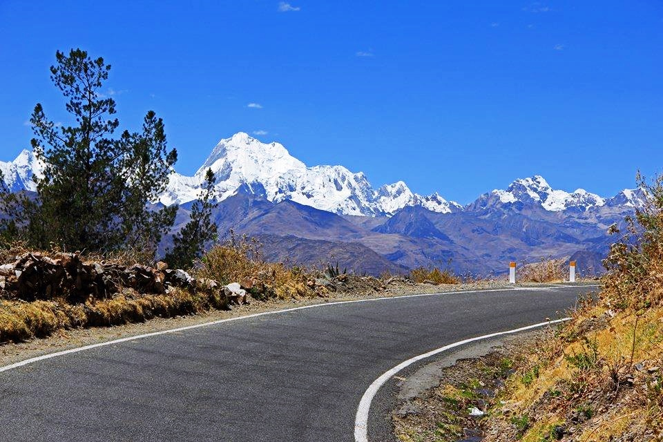
最も北の海沿いには白っぽい砂漠地帯がある。写真の(参考文献 Tambo Grande地域)は内陸にあり木が少し生えているが、海沿いは全く木が無い場所も多い。ちなみに石油パイプラインのようなものがある場合はかなり上の方に攻めて良いかもしれない(参考文献 Location of Peruvian crude oil (red), outcrop (green) and seep (blue))。

By Pitxiquin - Own work, CC BY-SA 4.0, Link
北東はIquitos～Nauta間の道路にストリートビューがある。Wikiによるとヤシの木のような木が生えている。

By Max Berger - Own work, CC BY-SA 4.0, Link
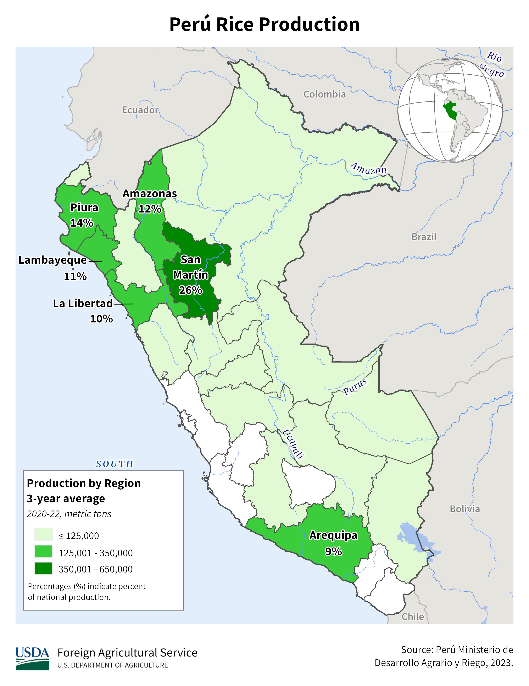
図だとアレキパ全体でコメの生産があるように見えるが、実際は川沿いの水が得られる地域しか田んぼがない。見た目がかなり特徴的なのでわかりやすい。
都市・町の絞り込み
- 最南端に砂漠に囲まれたTacnaという商業都市がある(参考文献 タクナ)
- IquitosやPucallpaの主な交通手段はリキシャ（Rickshaws）
- Machu Picchu付近ではGoogle Carが見えることがある(参考文献 マチュ・ピチュ)

Iquitosは外部から道路で直接アクセスできない都市(参考文献 Iquitos)。IquitosやPucallpaのような都市部からはなれた場所ではオートリキシャ（現地ではMototaxiと呼ぶらしい）が走っていて、相対的に車がかなり少ない。またIquitosはヨーロッパ風の建築が多い。同じような陸路でアクセスできない都市の例としてはグアテマラのLívingstonなどがある。
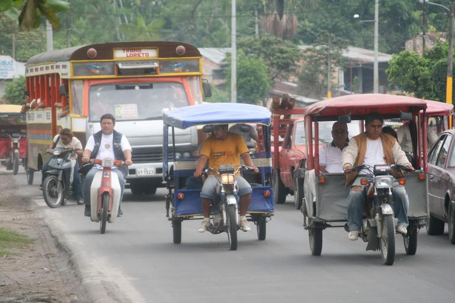
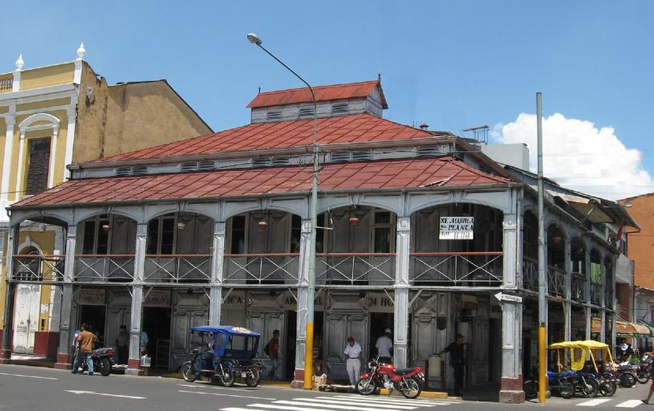
代表的な企業の説明
| 企業名 | コード | 説明 | 決算 | 配当履歴 |
|---|---|---|---|---|
| Cementos Pacasmayo | NASDAQ | ペルー北部最大のセメント会社。 | Dividend History |